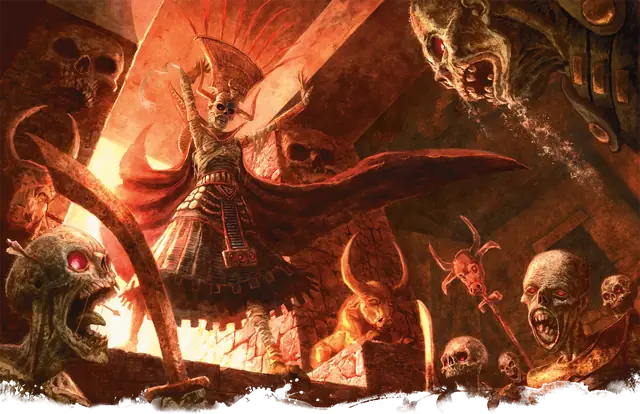

Мумия-владыка
Mummy Lord
Средняя или Маленькая Нежить (Жрец), Принципиальная Злая

Класс Защиты 17 Инициатива +10 (20)
Хиты 187 (25к8 + 75)
Скорость 30 футов
| мод | спас | ||
|---|---|---|---|
| СИЛ | 18 | +4 | +4 |
| ЛОВ | 10 | +0 | +0 |
| ТЕЛ | 17 | +3 | +3 |
| мод | спас | ||
|---|---|---|---|
| ИНТ | 11 | +0 | +5 |
| МДР | 19 | +4 | +9 |
| ХАР | 16 | +3 | +3 |
Уязвимость к урону Огонь
Иммунитеты Некротический, Яд; Испуганный, Истощение, Отравленный, Очарованный, Парализованный
Чувства пассивное Восприятие 19, Истинное зрение 60 футов
Языки Общий плюс три других языка
Опасность 15 (13 000 опыта или 15 000 опыта в Логове; БВ +5)
Особенности
Легендарное сопротивление (3/день, или 4/день в Логове). Если мумия проваливает спасбросок, она вместо этого может в нём преуспеть.
Сопротивление магии. Мумия-владыка совершает с Преимуществом спасброски от заклинаний и прочих магических эффектов.
Восстановление нежити. Спустя 24 часа после уничтожения тело мумии заново возрождается со всеми Хитами, если её сердце не повреждено. Её новое тело появляется в незанятом пространстве в логове мумии. Сердце — это Крошечный объект с КЗ 17, 10 Хитами и Иммунитетом ко всему урону, кроме урона Огнём.
Действия
Мультиатака. Мумия совершает одну атаку Кулаком разложения или Проведением негативной энергии, а также использует Ужасающий взор.
Кулак разложения. Бросок рукопашной атаки: +9, досягаемость 5 фт. Попадание: 15 (2к10 + 4) Дробящего урона плюс 10 (3к6) Некротического урона. Если цель — существо, она проклята. Проклятая цель не может восстанавливать Хиты или получать преимущества от завершения Долгого отдыха, и её максимум Хитов снижается на 10 (3к6) за каждые прошедшие 24 часа.Существо умирает и рассыпается в пыль, если его Хиты опускаются этой атакой до 0.
Проведение негативной энергии. Бросок дальнобойной атаки: +9, дистанция 60 фт. Попадание: 25 (6к6 + 4) Некротического урона.
Ужасающий взор. Спасбросок Мудрости: Сл 17, одно видимое мумией существо в 60 футах. Провал: 25 (6к6 + 4) Психического урона, и цель Парализована до конца следующего хода мумии.
Сотворение заклинаний. Мумия сотворяет одно из следующих заклинаний, не нуждаясь в Материальных компонентах (заклинательная характеристика — Мудрость, Сл спасброска заклинаний 17, +9 к попаданию атак заклинаний):
Неограниченно: Рассеивание магии, Чудотворство
1/день каждое: Нашествие насекомых, вариант 7-го уровня, Поднятие мертвеца, Поражение
Реакции
Песчаный вихрь. Условие: По мумии попадают броском атаки. Эффект: Мумия получает бонус +2 к КЗ против этой атаки, что может привести к её промаху, и телепортируется в видимое ей в пределах 60 футов незанятое пространство. Каждое видимое мумией существо по её выбору в пределах 5 футов от точки назначения Ослеплено до конца следующего хода мумии.
Легендарные действия
У этого существа есть 3 использования Легендарных действий (или 4 использования в его Логове); оно может немедленно после окончания хода другого существа потратить одно использование, чтобы совершить одно из следующих действий. Существо восполняет все потраченные использования в начале каждого своего хода.
Ужасный приказ. Мумия сотворяет Приказ (вариант 2-го уровня, заклинательная характеристика — та же, что для Сотворения заклинаний). Мумия не может совершить это действие снова до начала своего следующего хода.
Грозный взор. Мумия использует Ужасающий взор. Мумия не может совершить это действие снова до начала своего следующего хода.
Некротический удар. Мумия совершает одну атаку Кулаком разложения или Проведением негативной энергии.
Бонус мастерства +5
Среда обитания Болота, Пустыня
Сокровища Реликварные
Мумии
Древние покойники с бессмертными амбициями
Мистические обряды, как и могущественная вера, могут привязать дух существа с его останками до скончания времён. Если покой их места упокоения будет нарушен, эти создания, называемые мумиями, поднимают свои разваливающиеся тела, чтобы наказать незваных гостей и восстановить святость гробницы.
Мумии преследуют тех, кто стал им врагом: обычно это смертные, осквернившие место упокоения, укравшие погребальные сокровища или повредившие священные атрибуты их веры. Охваченные неугасающей яростью древние мертвецы пойдут на всё, чтобы отомстить и вернуть себе покой.
Мумия только выглядит хрупкой: её тело обладает сверхъестественной силой, а взгляд способен вселить страх в самые храбрые сердца. Даже если кому-то удастся вырваться из крепкой хватки нежити, на него падёт страшное проклятие: жертва постепенно увядает, пока не станет кучкой праха. Такое проклятие можно излечить лишь с помощью заклинания Снятие проклятия или подобной магии.
Некоторые из тех, кто отчаянно пытается избежать смерти, заключают ужасные сделки с чудовищными божествами. Отдавая своё сердце силам зла, взамен они обретают власть над смертью и проклятие бессмертия, которое связывает их разум и душу с иссохшим трупом. Свободные теперь от земных забот, мумии-владыки могут целыми веками преследовать свои цели.
Как правило, мумия-владыка обитает среди руин древнего дворца и храма, которым она раньше повелевала. Древняя вера и смертоносные силы наделили владыку пугающей магией, с помощью которой он поднимает мёртвых слуг и несёт разруху.
Сердце мумии-владыки — это предмет договора, дающего ему бессмертие. Владыки не носят его в своей груди, а прячут в надёжном месте. Какая бы судьба не постигла самого владыку, он сможет вернуться с того света, пока сердце не будет уничтожено огнём.
Разум мумии-владыки обыкновенно занят вековыми планами. Совершите бросок по таблице «План владыки мумий» или выберите древний замысел владыки мумий сами.
План владыки мумий
| 1к8 | Мумия-владыка собирается… |
| 1 | Открыть портал в прошлое, в то время, когда он был на пике своего могущества. |
| 2 | Провести ритуал, который можно совершить только раз в восемьсот лет. |
| 3 | Вернуть и воскресить тело любимой или любимого. |
| 4 | Отвоевать земли своей бывшей империи. |
| 5 | Собрать осколки своего разбитого сердца. |
| 6 | Заменить своего потомка на троне правителя царства. |
| 7 | Принести в жертву своему богу тысячу душ в обмен на настоящую жизнь. |
| 8 | Превратить народ целой страны в Нежить в своём услужении. |
Логова владык мумий
Как правило, владыки мумий скрываются в руинах тех мест, где они обитали при жизни. Их обиталища давно потеряны и забыты, а если не забыты, пользуются дурной славой.
Местность, в которой находится логово владыки мумий, изменяется из-за его присутствия, что создаёт следующие эффекты:
• Проклятая судьба. Каждый раз, когда существо, кроме самой мумии и её союзников, сотворяет заклинание школы Прорицания в пределах 1 мили от логова, оно должно совершить спасбросок Телосложения Сл 15. При провале заклинание не оказывает никакого эффекта, и действие, Бонусное действие или Реакция, использованное для сотворения заклинания, тратится впустую, однако другие ресурсы, использованные для сотворения заклинания, не тратятся.
• Поглощение душ. Cущества, находящиеся в пределах 1 мили от логова, совершают с Помехой Спасброски против смерти.
Если владыка мумий умирает или перемещает своё логово в другое место, все эти эффекты мгновенно исчезают. Эти эффекты начинают действовать вновь, если он получает новое тело (см. особенность «Камень души»).